library(pacman)
p_load(tidyverse, ggside, brms, broom, broom.mixed,install = T)
options(scipen=999) # get rid of sci notation
setwd("~/Library/CloudStorage/GoogleDrive-sm9518@princeton.edu/My Drive/Classes/Stats-blog/posts")
### create plot aesthetics
palette <- c(
"#772e25", "#c44536", "#ee9b00", "#197278", "#283d3b",
"#9CC5A1", "#6195C6", "#ADA7C9", "#4D4861", "grey50",
"#d4a373", "#8a5a44", "#4a6a74", "#5c80a8", "#a9c5a0",
"#7b9b8e", "#e1b16a", "#a69b7c", "#9d94c4", "#665c54"
)
palette_condition = c("#ee9b00", "#c44536","#005f73", "#283d3b", "#9CC5A1", "#6195C6", "#ADA7C9", "#4D4861")
plot_aes = theme_minimal() +
theme(
legend.position = "top",
legend.text = element_text(size = 12),
text = element_text(size = 16, family = "Futura Medium"),
axis.text = element_text(color = "black"),
axis.ticks.y = element_blank(),
plot.title = element_text(size = 20, hjust = 0.5) # Adjusted title size and centering
)Here is a worksheet and assignment that combines Bayes (brms) with tidyverse tools. The focus is on the essentials when it comes to simple linear regression with brms.
Please read and run through this worksheet and answer the conceptual questions that are interleaved within them. At the end of each part, is a coding exercise based on the material you’ve read until then.
Part 1: EDA, OLS, BRMS
Packages and data
Load the primary packages.
We’ll use the penguins data set from the palmerpenguins package.
data(penguins, package = "palmerpenguins")
# Any type of looking at data is a part of EDA
glimpse(penguins)Rows: 344
Columns: 8
$ species <fct> Adelie, Adelie, Adelie, Adelie, Adelie, Adelie, Adel…
$ island <fct> Torgersen, Torgersen, Torgersen, Torgersen, Torgerse…
$ bill_length_mm <dbl> 39.1, 39.5, 40.3, NA, 36.7, 39.3, 38.9, 39.2, 34.1, …
$ bill_depth_mm <dbl> 18.7, 17.4, 18.0, NA, 19.3, 20.6, 17.8, 19.6, 18.1, …
$ flipper_length_mm <int> 181, 186, 195, NA, 193, 190, 181, 195, 193, 190, 186…
$ body_mass_g <int> 3750, 3800, 3250, NA, 3450, 3650, 3625, 4675, 3475, …
$ sex <fct> male, female, female, NA, female, male, female, male…
$ year <int> 2007, 2007, 2007, 2007, 2007, 2007, 2007, 2007, 2007…head(penguins)# A tibble: 6 × 8
species island bill_length_mm bill_depth_mm flipper_length_mm body_mass_g
<fct> <fct> <dbl> <dbl> <int> <int>
1 Adelie Torgersen 39.1 18.7 181 3750
2 Adelie Torgersen 39.5 17.4 186 3800
3 Adelie Torgersen 40.3 18 195 3250
4 Adelie Torgersen NA NA NA NA
5 Adelie Torgersen 36.7 19.3 193 3450
6 Adelie Torgersen 39.3 20.6 190 3650
# ℹ 2 more variables: sex <fct>, year <int>You might divide the data set by the three levels of species.
penguins %>%
count(species) |>
DT::datatable()To start, we’ll make a subset of the data called chinstrap.
chinstrap <- penguins %>%
filter(species == "Chinstrap")
glimpse(chinstrap)Rows: 68
Columns: 8
$ species <fct> Chinstrap, Chinstrap, Chinstrap, Chinstrap, Chinstra…
$ island <fct> Dream, Dream, Dream, Dream, Dream, Dream, Dream, Dre…
$ bill_length_mm <dbl> 46.5, 50.0, 51.3, 45.4, 52.7, 45.2, 46.1, 51.3, 46.0…
$ bill_depth_mm <dbl> 17.9, 19.5, 19.2, 18.7, 19.8, 17.8, 18.2, 18.2, 18.9…
$ flipper_length_mm <int> 192, 196, 193, 188, 197, 198, 178, 197, 195, 198, 19…
$ body_mass_g <int> 3500, 3900, 3650, 3525, 3725, 3950, 3250, 3750, 4150…
$ sex <fct> female, male, male, female, male, female, female, ma…
$ year <int> 2007, 2007, 2007, 2007, 2007, 2007, 2007, 2007, 2007…We’ve done from a full data set with \(N = 344\) rows, to a subset with \(n = 68\) rows. (“$” signs hold LaTex snippets)
More Exploratory data analysis (EDA)
Our focal variables will be body_mass_g and bill_length_mm. Here they are in a scatter plot.
chinstrap %>%
ggplot(aes(x = body_mass_g, y = bill_length_mm)) +
geom_point() +
stat_smooth(method = "lm", formula = 'y ~ x', se = FALSE) + plot_aes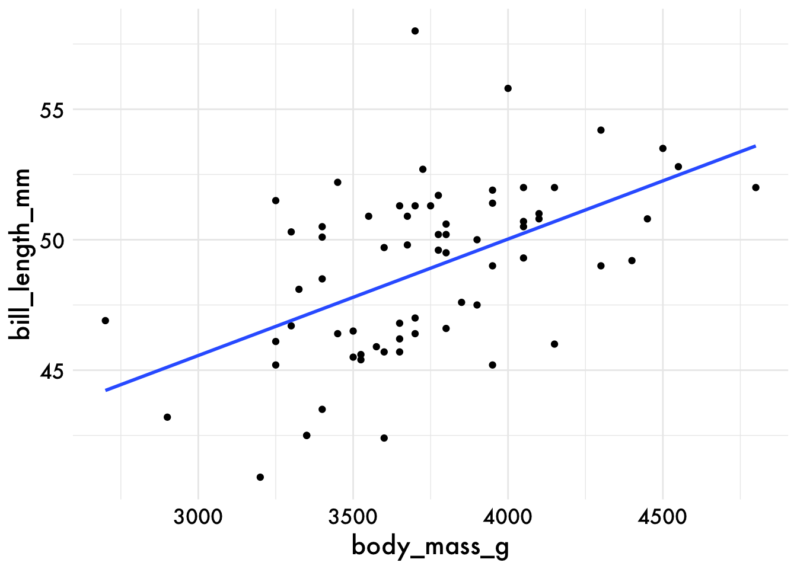
We can augment the plot with some nice functions from the ggside package.
chinstrap %>%
ggplot(aes(x = body_mass_g, y = bill_length_mm)) +
geom_point() +
stat_smooth(method = "lm", formula = 'y ~ x', se = FALSE) +
# from ggside
geom_xsidehistogram(bins = 30) +
geom_ysidehistogram(bins = 30) +
scale_xsidey_continuous(breaks = NULL) +
scale_ysidex_continuous(breaks = NULL) +
theme(ggside.panel.scale = 0.25) + plot_aes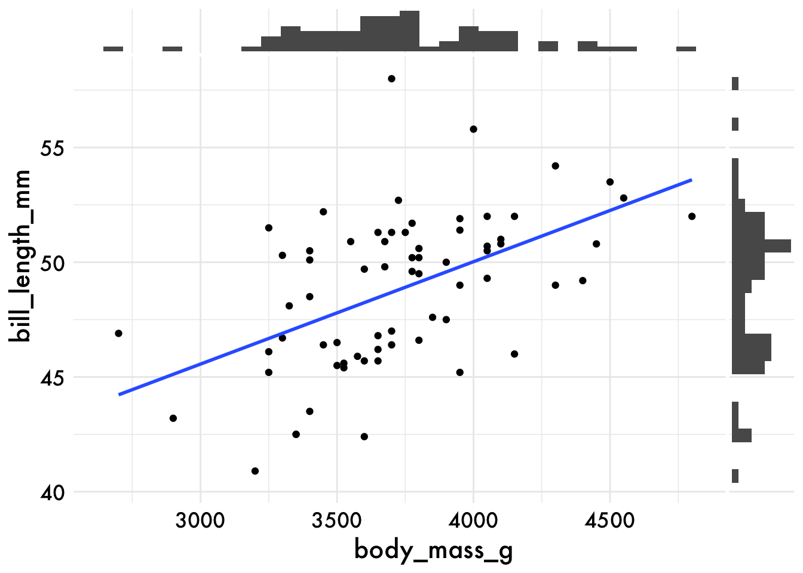
It’s a good idea to get a sense of the sample statistics. Here are the means and SD’s for the two variables.
chinstrap %>%
summarise(body_mass_g_mean = mean(body_mass_g),
body_mass_g_sd = sd(body_mass_g),
bill_length_mm_mean = mean(bill_length_mm),
bill_length_mm_sd = sd(bill_length_mm)) |>
pivot_longer(cols = everything()) |>
mutate(name = str_replace(name, "_", " "),
value = round(value, digits = 3)) |>
DT::datatable()And you know that more efficient way to compute sample statistics for multiple variables is to first convert the data into the long format with pivot_longer(). Then you use a group_by() line before the main event in summarise().
chinstrap %>%
pivot_longer(cols = c(body_mass_g, bill_length_mm)) %>%
group_by(name) %>%
summarise(mean = mean(value),
sd = sd(value),
# count the missing data (if any)
n_missing = sum(is.na(value))) |>
mutate(across(c(mean, sd), ~ round(., digits = 3)) ) |>
DT::datatable()Question 1.1: What do the marginal histograms added by ggside tell you about the distribution of body_mass_g and bill_length_mm individually?
They tell us that hte body_mass_g is right skewed and bill_length_mm is left skewed. But its important to note that these inferences are descriptive since we don’t have skewness and kurotsis stats.
OLS
We’ll fit the model
\[ \begin{align} \text{bill_length_mm}_i & = \beta_0 + \beta_1 \text{body_mass_g}_i + \epsilon_i \\ \epsilon_i & \sim \operatorname{Normal}(0, \sigma_\epsilon) \end{align} \]
where bill_length_mm is the dependent variable or a response variable. The sole predictor is body_mass_g. Both variables have \(i\) subscripts, which indicate they vary across the \(i\) rows in the data set. For now, you might think if \(i\) as standing for “index.” The last term in the first line, \(\epsilon\), is often called the error, or noise term. In the second line, we see we’re making the conventional assumption the “errors” are normally distributed around the regression line.
An alternative and equivalent way to write that equation is
\[ \begin{align} \text{bill_length_mm}_i & \sim \operatorname{Normal}(\mu_i, \sigma) \\ \mu_i & = \beta_0 + \beta_1 \text{body_mass_g}_i, \end{align} \]
which is meant to convey we are modeling bill_length_mm as normally distributed, with a conditional mean. You don’t tend to see equations written this way in the OLS paradigm. However, this style of notation will serve us better when we start modeling our data with other distributions.
This notation grows on you
Fitting the model with the base R lm() function, which uses the OLS algorithm.
# fit
fit1.ols <- lm(
data = chinstrap,
bill_length_mm ~ 1 + body_mass_g
)
# summarize the results
summary(fit1.ols)
Call:
lm(formula = bill_length_mm ~ 1 + body_mass_g, data = chinstrap)
Residuals:
Min 1Q Median 3Q Max
-5.8399 -2.2370 0.3247 1.8385 9.3138
Coefficients:
Estimate Std. Error t value Pr(>|t|)
(Intercept) 32.1741929 3.4433623 9.344 0.000000000000107 ***
body_mass_g 0.0044627 0.0009176 4.863 0.000007480491992 ***
---
Signif. codes: 0 '***' 0.001 '**' 0.01 '*' 0.05 '.' 0.1 ' ' 1
Residual standard error: 2.887 on 66 degrees of freedom
Multiple R-squared: 0.2638, Adjusted R-squared: 0.2527
F-statistic: 23.65 on 1 and 66 DF, p-value: 0.00000748The point estimates are in scientific notation. We can pull them with the coef() function.
coef(fit1.ols) (Intercept) body_mass_g
32.174192865 0.004462694 We can compute fitted values, or predictions, with the predict() function. Here’s the default behavior. Modifying to just get the top 6 to keep this concise.
predict(fit1.ols) |>
head() 1 2 3 4 5 6
47.79362 49.57870 48.46303 47.90519 48.79773 49.80183 We get one prediction, one fitted value, for each case in the data set. We can express the uncertainty around those predictions with confidence intervals.
predict(fit1.ols,
interval = "confidence") %>%
head() |>
DT::datatable()We might also ask for a standard error for each prediction.
predict(fit1.ols,
se.fit = TRUE) %>%
data.frame() fit se.fit df residual.scale
1 47.79362 0.4102359 66 2.886728
2 49.57870 0.3821060 66 2.886728
3 48.46303 0.3582736 66 2.886728
4 47.90519 0.3987564 66 2.886728
5 48.79773 0.3501459 66 2.886728
6 49.80183 0.4026961 66 2.886728
7 46.67795 0.5648454 66 2.886728
8 48.90930 0.3504110 66 2.886728
9 50.69437 0.5185569 66 2.886728
10 48.68616 0.3513814 66 2.886728
11 49.13243 0.3554108 66 2.886728
12 49.02086 0.3521734 66 2.886728
13 48.68616 0.3513814 66 2.886728
14 50.24810 0.4550963 66 2.886728
15 48.12832 0.3789333 66 2.886728
16 50.24810 0.4550963 66 2.886728
17 46.90108 0.5296025 66 2.886728
18 48.68616 0.3513814 66 2.886728
19 47.57049 0.4359183 66 2.886728
20 51.81005 0.7050167 66 2.886728
21 48.23989 0.3707575 66 2.886728
22 47.34735 0.4647215 66 2.886728
23 45.11601 0.8407923 66 2.886728
24 49.13243 0.3554108 66 2.886728
25 46.90108 0.5296025 66 2.886728
26 50.69437 0.5185569 66 2.886728
27 47.34735 0.4647215 66 2.886728
28 49.13243 0.3554108 66 2.886728
29 48.68616 0.3513814 66 2.886728
30 52.47945 0.8273195 66 2.886728
31 46.45481 0.6015246 66 2.886728
32 51.36378 0.6270243 66 2.886728
33 47.12422 0.4961023 66 2.886728
34 50.47124 0.4856973 66 2.886728
35 48.23989 0.3707575 66 2.886728
36 49.57870 0.3821060 66 2.886728
37 49.35556 0.3661365 66 2.886728
38 53.59512 1.0397147 66 2.886728
39 44.22347 1.0105441 66 2.886728
40 52.25632 0.7859885 66 2.886728
41 49.80183 0.4026961 66 2.886728
42 48.46303 0.3582736 66 2.886728
43 48.01676 0.3882941 66 2.886728
44 47.79362 0.4102359 66 2.886728
45 48.57459 0.3541019 66 2.886728
46 52.03318 0.7451900 66 2.886728
47 47.34735 0.4647215 66 2.886728
48 51.36378 0.6270243 66 2.886728
49 46.67795 0.5648454 66 2.886728
50 48.57459 0.3541019 66 2.886728
51 47.01265 0.5126128 66 2.886728
52 49.80183 0.4026961 66 2.886728
53 48.23989 0.3707575 66 2.886728
54 50.24810 0.4550963 66 2.886728
55 47.12422 0.4961023 66 2.886728
56 47.57049 0.4359183 66 2.886728
57 46.67795 0.5648454 66 2.886728
58 50.24810 0.4550963 66 2.886728
59 49.13243 0.3554108 66 2.886728
60 47.90519 0.3987564 66 2.886728
61 49.80183 0.4026961 66 2.886728
62 48.46303 0.3582736 66 2.886728
63 48.46303 0.3582736 66 2.886728
64 50.02497 0.4272392 66 2.886728
65 47.34735 0.4647215 66 2.886728
66 49.02086 0.3521734 66 2.886728
67 50.47124 0.4856973 66 2.886728
68 49.02086 0.3521734 66 2.886728Instead of relying on predictions from the values in the data, we might instead define a sequence of values from the predictor variable. We’ll call those nd.
nd <- tibble(body_mass_g = seq(from = min(chinstrap$body_mass_g),
to = max(chinstrap$body_mass_g),
length.out = 50))
glimpse(nd)Rows: 50
Columns: 1
$ body_mass_g <dbl> 2700.000, 2742.857, 2785.714, 2828.571, 2871.429, 2914.286…We can insert our nd data into the newdata argument. Here we are using the model to predict new data
predict(fit1.ols,
interval = "confidence",
newdata = nd) %>%
# just the top 6
head() fit lwr upr
1 44.22347 42.20585 46.24108
2 44.41473 42.47057 46.35888
3 44.60598 42.73489 46.47708
4 44.79724 42.99874 46.59574
5 44.98850 43.26207 46.71493
6 45.17976 43.52482 46.83469Now we wrangle those predictions a bit and pump the results right into ggplot().
predict(fit1.ols,
interval = "confidence",
newdata = nd) %>%
data.frame() %>%
bind_cols(nd) %>%
ggplot(aes(x = body_mass_g)) +
# 95% confidence interval ribbon
geom_ribbon(aes(ymin = lwr, ymax = upr),
alpha = 0.2) +
# point estimate line
geom_line(aes(y = fit)) +
geom_point(data = chinstrap,
aes(y = bill_length_mm)) + plot_aes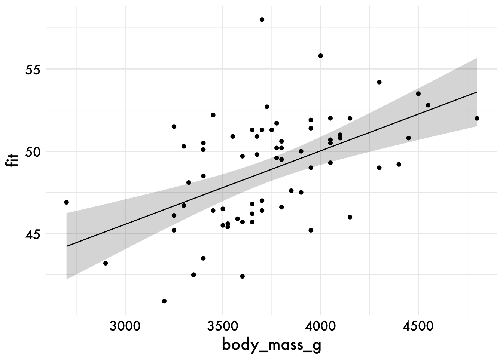
If we wanted to, we could look at the residuals with help from the residuals() function.
residuals(fit1.ols) |>
head() 1 2 3 4 5 6
-1.2936220 0.4213003 2.8369738 -2.5051894 3.9022718 -4.6018344 Here we might put them in a tibble and display them in a plot.
# put them in a tibble
tibble(r = residuals(fit1.ols)) %>%
ggplot(aes(x = r)) +
geom_histogram(binwidth = 1) + plot_aes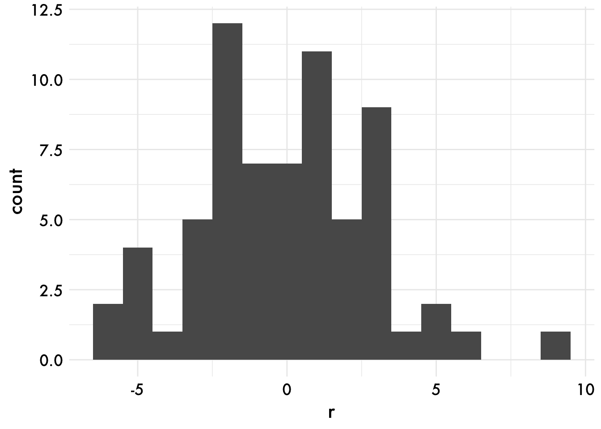
Question 1.2: Can you predict what the mean value, and standard deviations will be? Why? Calculate it. Compare this against outputs in summary(fit1.ols) and explain. Map the values you find to the latex equations before.
We can predict that the mean value will be 0 and the standard deviation will be 1. This is because the residuals are the difference between the observed and predicted values.
Bayes with default settings
We’ll be fitting our Bayesian models with the brms package. The primary function is brm().
brm() can work a lot like the OLS-based lm() function. For example, here’s how to fit a Bayesian version of our OLS model fit1.ols.
model_path <- file.path("~/Library/CloudStorage/GoogleDrive-sm9518@princeton.edu/My Drive/Classes/Stats-blog/posts/Lab-8/models/fit1.rds")
if (!file.exists(model_path)) {
fit1.b <- brm(
data = chinstrap,
bill_length_mm ~ 1 + body_mass_g
)
saveRDS(fit1.b, model_path)
} else {
# If the RDS file already exists, load the data from it
fit1.b <- readRDS(model_path)
}Notice what’s happening in the console, below. We’ll get into the details of what just happened later. For now, appreciate we just fit our first Bayesian model, and it wasn’t all that hard.
Summarize the model.
summary(fit1.b) Family: gaussian
Links: mu = identity; sigma = identity
Formula: bill_length_mm ~ 1 + body_mass_g
Data: chinstrap (Number of observations: 68)
Draws: 4 chains, each with iter = 2000; warmup = 1000; thin = 1;
total post-warmup draws = 4000
Regression Coefficients:
Estimate Est.Error l-95% CI u-95% CI Rhat Bulk_ESS Tail_ESS
Intercept 32.17 3.46 25.20 38.77 1.00 5027 2952
body_mass_g 0.00 0.00 0.00 0.01 1.00 5128 2545
Further Distributional Parameters:
Estimate Est.Error l-95% CI u-95% CI Rhat Bulk_ESS Tail_ESS
sigma 2.92 0.27 2.45 3.51 1.00 1860 1673
Draws were sampled using sampling(NUTS). For each parameter, Bulk_ESS
and Tail_ESS are effective sample size measures, and Rhat is the potential
scale reduction factor on split chains (at convergence, Rhat = 1).Question 1.3: Contrast the language of in the brm() output from the in the lm() output. Ignore ‘Rhat,’ ‘Bulk_ESS,’ and ‘Tail_ESS’ for now.
We can get a quick and dirty plot of the fitted line with the conditional_effects() function.
conditional_effects(fit1.b) 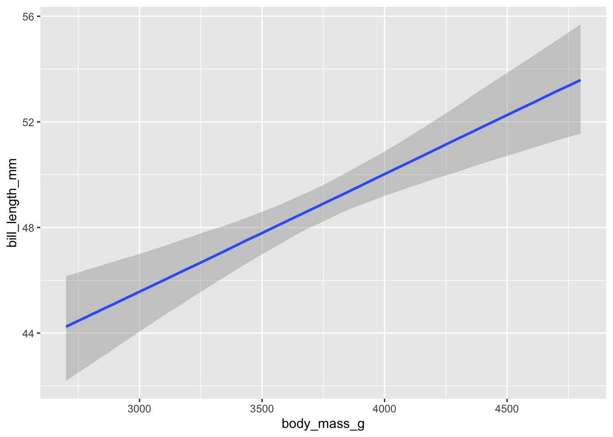
# %>%
# plot(points = TRUE)Coefficients and coefficient plots
We might want to compare the coefficient summaries from the OLS model to those from the Bayesian model. Here’s the frequentist summary:
cbind(coef(fit1.ols), # point estimates
sqrt(diag(vcov(fit1.ols))), # standard errors
confint(fit1.ols)) # 95% CIs 2.5 % 97.5 %
(Intercept) 32.174192865 3.4433622902 25.299298235 39.049087495
body_mass_g 0.004462694 0.0009176106 0.002630625 0.006294763We can compute a focused summary of the Bayesian model with the fixef() function.
fixef(fit1.b) Estimate Est.Error Q2.5 Q97.5
Intercept 32.171601696 3.4599647320 25.197783898 38.767885598
body_mass_g 0.004464182 0.0009227771 0.002668377 0.006304322In this case, the results are very similar.
We can also pull this information from our OLS model with the broom::tidy() function.
tidy(fit1.ols, conf.int = TRUE)# A tibble: 2 × 7
term estimate std.error statistic p.value conf.low conf.high
<chr> <dbl> <dbl> <dbl> <dbl> <dbl> <dbl>
1 (Intercept) 32.2 3.44 9.34 1.07e-13 25.3 39.0
2 body_mass_g 0.00446 0.000918 4.86 7.48e- 6 0.00263 0.00629If you would like to use the tidy() function with your brms models, it will have to be the version of tidy() from the broom.mixed package.
tidy(fit1.b)# A tibble: 3 × 8
effect component group term estimate std.error conf.low conf.high
<chr> <chr> <chr> <chr> <dbl> <dbl> <dbl> <dbl>
1 fixed cond <NA> (Intercept) 32.2 3.46 25.2 38.8
2 fixed cond <NA> body_mass_g 0.00446 0.000923 0.00267 0.00630
3 ran_pars cond Residual sd__Observa… 2.92 0.266 2.45 3.51 Here’s how to wrangle and combine these two results into a single data frame. Then we’ll make a coefficient plot.
bind_rows(
tidy(fit1.ols, conf.int = TRUE) %>% select(term, estimate, contains("conf")),
tidy(fit1.b) %>% select(term, estimate, contains("conf")) %>% filter(term != "sd__Observation")
) %>%
mutate(method = rep(c("lm()", "brm()"), each = 2)) %>%
ggplot(aes(x = estimate, xmin = conf.low, xmax = conf.high, y = method)) +
geom_pointrange() +
scale_x_continuous("parameter space", expand = expansion(mult = 0.2)) +
scale_y_discrete(expand = expansion(mult = 5)) +
facet_wrap(~ term, scales = "free_x") + plot_aes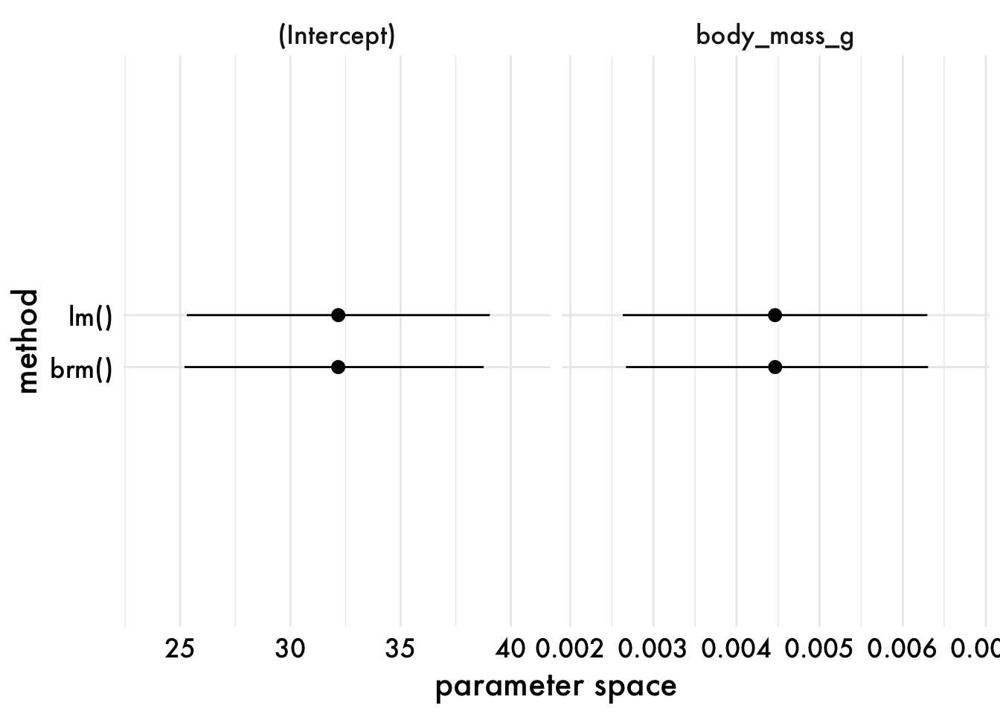
At a superficial level for simple conventional regression type models, the results from a Bayesian brm() model will be very similar to those from an OLS lm() model. This will not always be case, and even in this example there are many differences once we look below the surface.
More Questions/Exercise
Go back to the full penguins data set. This time, make a subset of the data called gentoo, which is only the cases for which species == "Gentoo".
gentoo <- penguins %>%
filter(species == "Gentoo")
gentoo |>
head() |>
DT::datatable()Can you fit the same OLS model to these data?
gentoo_ols = lm( bill_length_mm ~ 1 + body_mass_g, data = gentoo)
summary(gentoo_ols)
Call:
lm(formula = bill_length_mm ~ 1 + body_mass_g, data = gentoo)
Residuals:
Min 1Q Median 3Q Max
-5.8802 -1.5075 -0.0575 1.3118 8.1107
Coefficients:
Estimate Std. Error t value Pr(>|t|)
(Intercept) 26.739549 2.106594 12.693 <0.0000000000000002 ***
body_mass_g 0.004091 0.000413 9.905 <0.0000000000000002 ***
---
Signif. codes: 0 '***' 0.001 '**' 0.01 '*' 0.05 '.' 0.1 ' ' 1
Residual standard error: 2.3 on 121 degrees of freedom
(1 observation deleted due to missingness)
Multiple R-squared: 0.4478, Adjusted R-squared: 0.4432
F-statistic: 98.12 on 1 and 121 DF, p-value: < 0.00000000000000022How about plotting the results with predict()?
predict(gentoo_ols,
interval = "confidence") %>%
head() |>
DT::datatable()### create new data
nd_2 <- tibble(body_mass_g = seq(from = min(gentoo$body_mass_g,na.rm = TRUE),
to = max(gentoo$body_mass_g,na.rm = TRUE),
length.out = 1e6))
predict(gentoo_ols,
interval = "confidence",
newdata = nd_2) %>%
bind_cols(nd_2) %>%
data.frame() |>
ggplot(aes(x = body_mass_g)) + # Ensure that body_mass_g is available here
geom_ribbon(aes(ymin = lwr, ymax = upr),
alpha = 0.2) +
# point estimate line
geom_line(aes(y = fit)) +
# Add points for the original data
geom_point(data = gentoo, aes(x = body_mass_g, y = bill_length_mm)) + plot_aes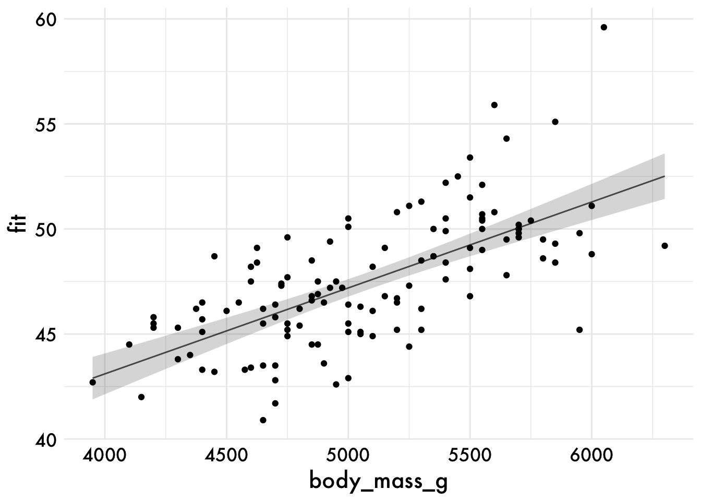
Can you fit the same default Bayesian brm() model to these data?
model_path <- file.path("~/Library/CloudStorage/GoogleDrive-sm9518@princeton.edu/My Drive/Classes/Stats-blog/posts/Lab-8/models/fit2.rds")
if (!file.exists(model_path)) {
fit2 <- brm(
data = gentoo,
bill_length_mm ~ 1 + body_mass_g
)
saveRDS(fit1.b, model_path)
} else {
# If the RDS file already exists, load the data from it
fit2 <- readRDS(model_path)
}
summary(fit2) Family: gaussian
Links: mu = identity; sigma = identity
Formula: bill_length_mm ~ 1 + body_mass_g
Data: gentoo (Number of observations: 123)
Draws: 4 chains, each with iter = 2000; warmup = 1000; thin = 1;
total post-warmup draws = 4000
Regression Coefficients:
Estimate Est.Error l-95% CI u-95% CI Rhat Bulk_ESS Tail_ESS
Intercept 26.77 2.14 22.65 31.06 1.00 4282 2507
body_mass_g 0.00 0.00 0.00 0.00 1.00 4325 2620
Further Distributional Parameters:
Estimate Est.Error l-95% CI u-95% CI Rhat Bulk_ESS Tail_ESS
sigma 2.32 0.15 2.06 2.64 1.01 1766 1628
Draws were sampled using sampling(NUTS). For each parameter, Bulk_ESS
and Tail_ESS are effective sample size measures, and Rhat is the potential
scale reduction factor on split chains (at convergence, Rhat = 1).How about plotting the results with conditional_effects()?
conditional_effects(fit2) 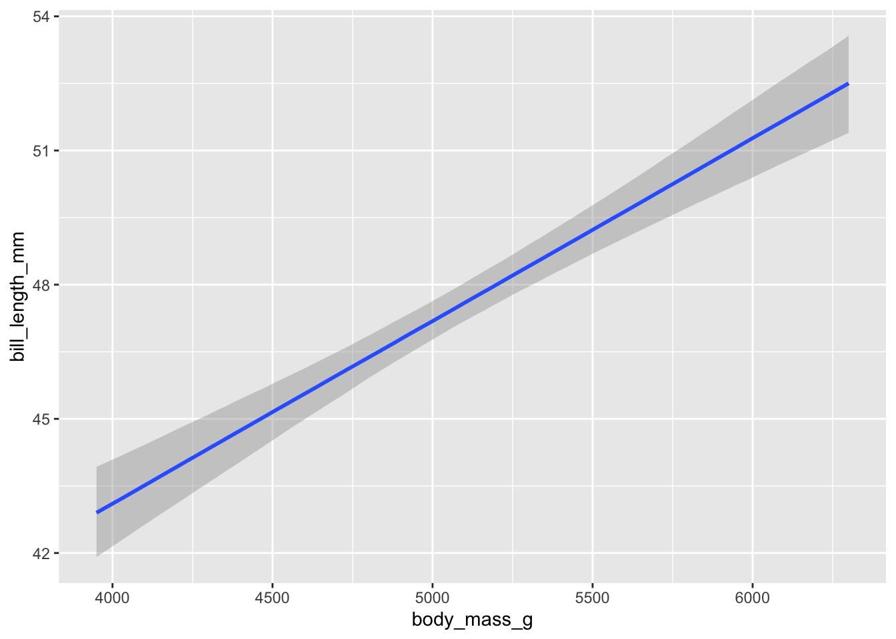
Can you make a coefficient plot comparing the new OLS and Bayesian beta coefficients?
bind_rows(
tidy(gentoo_ols, conf.int = TRUE) %>% select(term, estimate, contains("conf")),
tidy(fit2) %>% select(term, estimate, contains("conf")) %>% filter(term != "sd__Observation")
) %>%
mutate(method = rep(c("lm()", "brm()"), each = 2)) %>%
ggplot(aes(x = estimate, xmin = conf.low, xmax = conf.high, y = method)) +
geom_pointrange() +
scale_x_continuous("parameter space", expand = expansion(mult = 0.2)) +
scale_fill_manual(values = palette) +
scale_y_discrete(expand = expansion(mult = 5)) +
facet_wrap(~ term, scales = "free_x") + plot_aes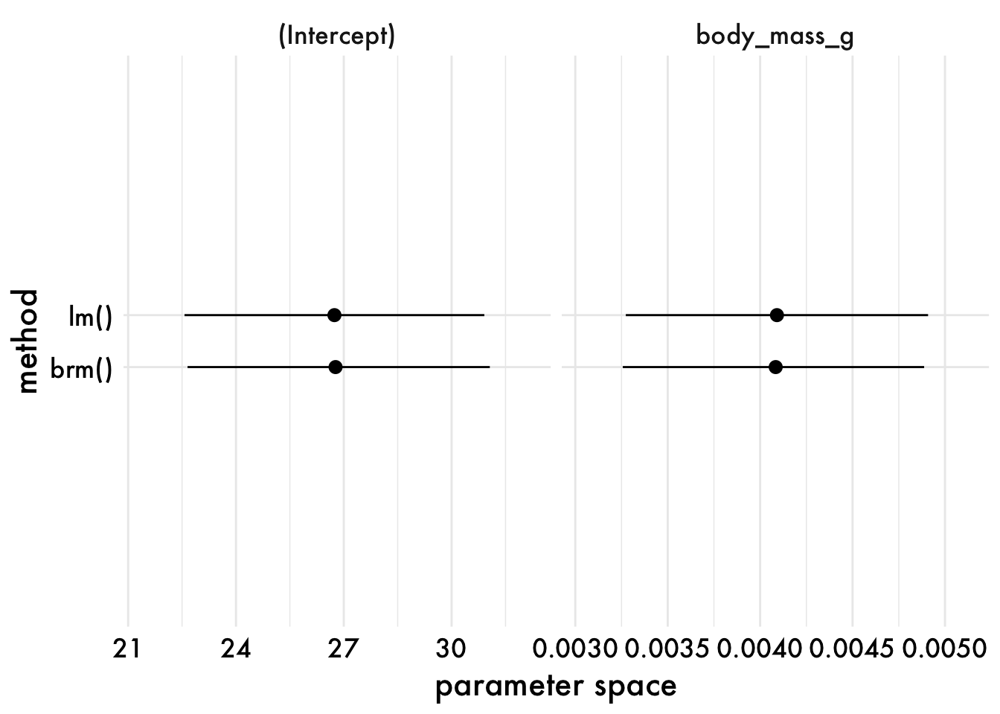
Part 2: Penguins and their posteriors
Exploring model results
We can extract the posterior draws from our Bayesian models with the as_draws_df() function.
as_draws_df(fit1.b)# A draws_df: 1000 iterations, 4 chains, and 6 variables
b_Intercept b_body_mass_g sigma Intercept lprior lp__
1 38 0.0030 2.8 49 -4.2 -172
2 39 0.0025 2.6 49 -4.2 -175
3 34 0.0039 2.6 49 -4.2 -172
4 31 0.0046 2.7 49 -4.3 -172
5 28 0.0054 2.7 49 -4.3 -172
6 34 0.0040 3.0 49 -4.3 -171
7 35 0.0038 3.3 49 -4.4 -172
8 29 0.0052 2.7 48 -4.3 -172
9 35 0.0038 2.9 49 -4.3 -171
10 37 0.0032 2.8 49 -4.3 -172
# ... with 3990 more draws
# ... hidden reserved variables {'.chain', '.iteration', '.draw'}Note the meta data. We can get a sense of the full posterior distributions of the \(\beta\) parameters with plots.
# wrangle
as_draws_df(fit1.b) %>%
pivot_longer(starts_with("b_")) %>%
# plot!
ggplot(aes(x = value)) +
# geom_density(fill = "grey20") +
geom_histogram(bins = 40) +
facet_wrap(~ name, scales = "free") + plot_aes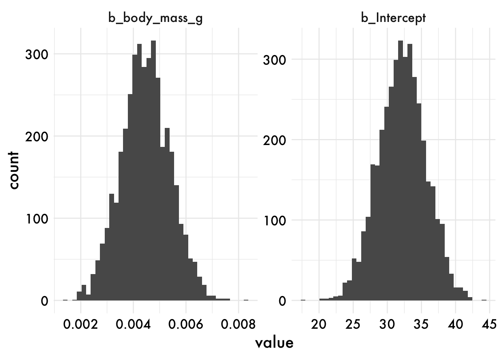
We might summarize those posterior distributions with basic descriptive statistics, like their means, SD’s, and inner 95-percentile range.
as_draws_df(fit1.b) %>%
pivot_longer(starts_with("b_")) %>%
group_by(name) %>%
summarise(mean = mean(value),
sd = sd(value),
ll = quantile(value, probs = 0.025),
ul = quantile(value, probs = 0.975)) |>
DT::datatable()Notice how these values match up exactly with those from fixef().
fixef(fit1.b) Estimate Est.Error Q2.5 Q97.5
Intercept 32.171601696 3.4599647320 25.197783898 38.767885598
body_mass_g 0.004464182 0.0009227771 0.002668377 0.006304322Thus,
- The Bayesian posterior mean is analogous to the frequentist point estimate.
- The Bayesian posterior SD is analogous to the frequentist standard error.
- The Bayesian posterior percentile-based 95% (credible) interval is analogous to the frequentist 95% confidence interval.
These are not exactly the same, mind you. But they serve similar functions.
We can also get a sense of these distributions with the plot() function.
plot(fit1.b)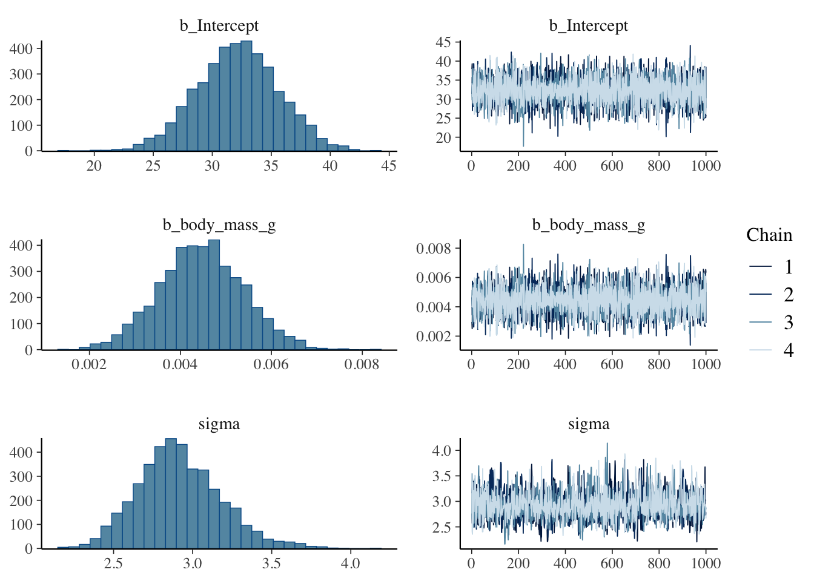
Ignore the trace plots on the right for a moment. And let’s consider the pairs() plot.
pairs(fit1.b)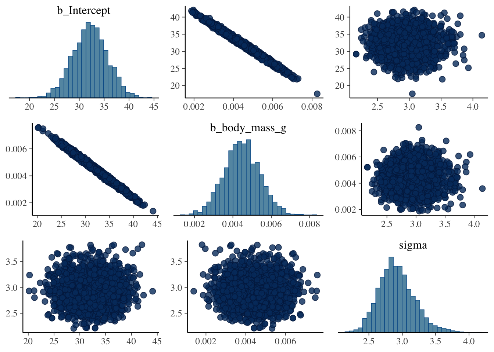
# we can adjust some of the settings with the off_diag_args argument
pairs(fit1.b, off_diag_args = list(size = 1/4, alpha = 1/4))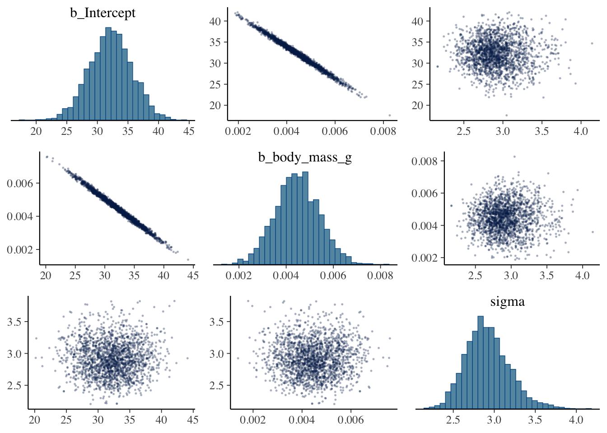
Question 2.1 : In the parlance of Probability, do you know what is the term by which the distributions in the diagonal of the above plot are known as? And the distributions in the off-diagonal?
The distributions in the diagonal are known as the marginal distributions and the distributions in the off-diagonal are known as the joint distributions.
Notice how the two \(\beta\) parameters seem to have a strong negative correlation. We can quantify that correlation with the vcov() function.
vcov(fit1.b) # variance/covariance metric Intercept body_mass_g
Intercept 11.971355947 -0.0031762934154
body_mass_g -0.003176293 0.0000008515175vcov(fit1.b, correlation = TRUE) # correlation metric Intercept body_mass_g
Intercept 1.0000000 -0.9948375
body_mass_g -0.9948375 1.0000000This correlation/covariance among the parameters is not unique to Bayesian models. Here’s the vcov() output for the OLS model.
vcov(fit1.ols) # variance/covariance metric (Intercept) body_mass_g
(Intercept) 11.856743861 -0.0031432947972
body_mass_g -0.003143295 0.0000008420092I’m not aware of an easy way to get that output in a correlation metric for our OLS model. Here’s how to compute the correlation by hand.
cov_xy <- vcov(fit1.ols)[2, 1] # covariance between the intercept and slope
var_x <- vcov(fit1.ols)[1, 1] # variance for the intercept
var_y <- vcov(fit1.ols)[2, 2] # variance for the slope
# convert the covariance into a correlation
cov_xy / (sqrt(var_x) * sqrt(var_y))[1] -0.9948188That code follows the definition of a covariance, which can be expressed as
\[ \text{Cov}(x, y) = \rho \sigma_x \sigma_y, \]
where \(\sigma_x\) is the standard deviation for x, \(\sigma_y\) is the standard deviation for y, and \(\rho\) is their correlation. And thus, you can convert a covariance into a correlation with the formula
\[ \rho = \frac{\sigma_{xy}}{\sigma_x \sigma_y}, \]
where \(\sigma_{xy}\) is the covariance of x and y.
Draws
Let’s save the as_draws_df() output for our model as an object called draws.
draws <- as_draws_df(fit1.b)
glimpse(draws)Rows: 4,000
Columns: 9
$ b_Intercept <dbl> 37.92621, 39.29808, 34.15103, 31.39905, 28.47337, 34.143…
$ b_body_mass_g <dbl> 0.002966134, 0.002510550, 0.003885012, 0.004581258, 0.00…
$ sigma <dbl> 2.761649, 2.573020, 2.613326, 2.694444, 2.727092, 3.0373…
$ Intercept <dbl> 48.99905, 48.67019, 48.65413, 48.50129, 48.67069, 48.982…
$ lprior <dbl> -4.241599, -4.220093, -4.230620, -4.263561, -4.255627, -…
$ lp__ <dbl> -172.4217, -174.5516, -171.7488, -171.5667, -171.6560, -…
$ .chain <int> 1, 1, 1, 1, 1, 1, 1, 1, 1, 1, 1, 1, 1, 1, 1, 1, 1, 1, 1,…
$ .iteration <int> 1, 2, 3, 4, 5, 6, 7, 8, 9, 10, 11, 12, 13, 14, 15, 16, 1…
$ .draw <int> 1, 2, 3, 4, 5, 6, 7, 8, 9, 10, 11, 12, 13, 14, 15, 16, 1…For each parameter in the model, we have 4,000 draws from the posterior.
Question 2.2: How does this concept relate to representing uncertainty? Can you anticipate how predictions are made based upon these 4000 draws and the linear regression formula?
The 4000 draws represent the uncertainty in the model. The predictions are made by using the 4000 draws to calculate the predicted values for each observation in the data set. The linear regression formula is used to calculate the predicted values for each observation in the data set.
\[\widehat{\text{bill_length_mm}}_i = \beta_0 + \beta_1 \text{body_mass_g}_i.\]
Let’s break the 4000 draws down with our draws object.
# adjust the parameter names
draws <- draws %>%
mutate(beta0 = b_Intercept,
beta1 = b_body_mass_g)
# Note: go through this one line at a time
draws %>%
select(.draw, beta0, beta1) %>%
mutate(body_mass_g = mean(chinstrap$body_mass_g)) %>%
mutate(y_hat = beta0 + beta1 * body_mass_g) %>%
ggplot(aes(x = y_hat)) +
geom_density()+
labs(title = "Bayesians have posterior distributions",
x = expression(hat(italic(y))*'|'*italic(x)==3733.1)) +
coord_cartesian(xlim = c(47, 51)) + plot_aes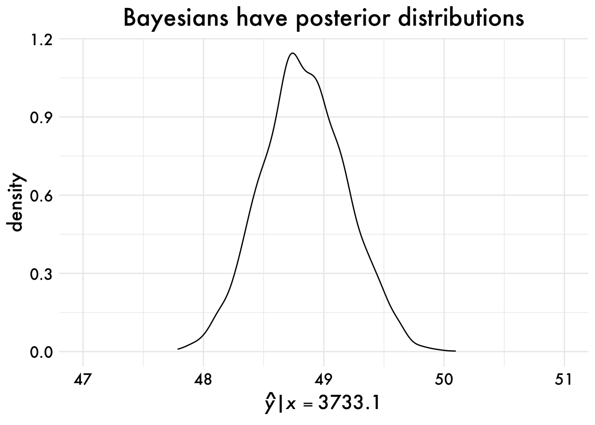
Here’s what that is for the OLS model.
predict(fit1.ols,
newdata = tibble(body_mass_g = mean(chinstrap$body_mass_g)),
interval = "confidence") %>%
data.frame() %>%
ggplot(aes(x = fit, xmin = lwr, xmax = upr, y = 0)) +
geom_pointrange() +
scale_y_continuous(NULL, breaks = NULL) +
labs(title = "Frequentists have point estmates and 95% CI's",
x = expression(hat(italic(y))*'|'*italic(x)==3733.1)) +
coord_cartesian(xlim = c(47, 51)) + plot_aes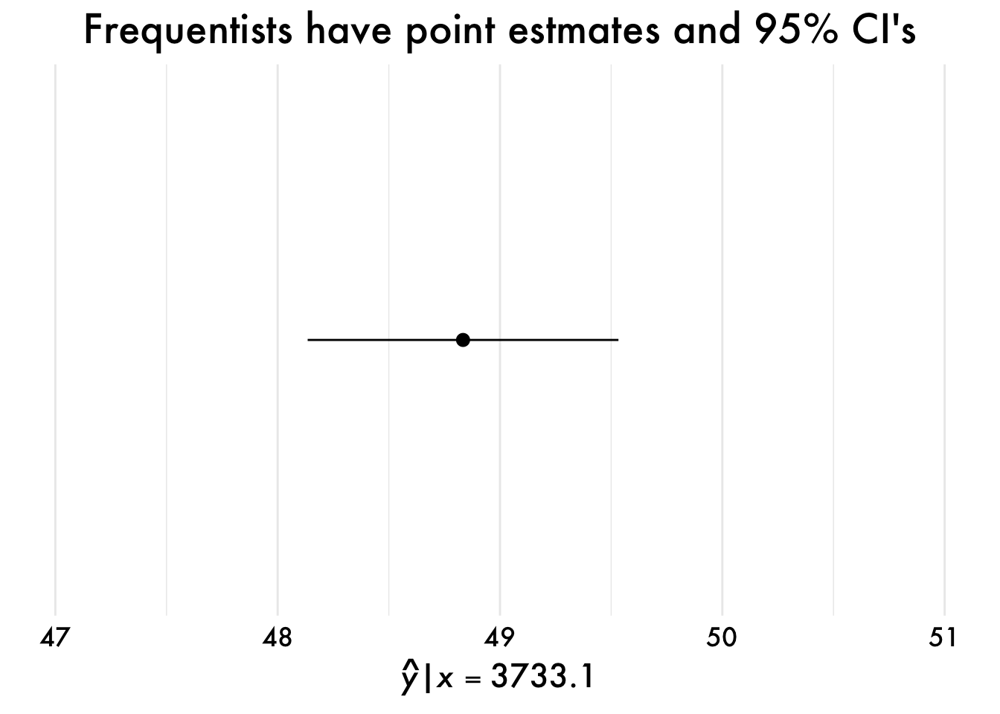
Another handy way to present a Bayesian posterior is as a density with a point-interval summary below.
library(ggdist) #for stat_half_eye and mean_qi
draws %>%
mutate(body_mass_g = mean(chinstrap$body_mass_g)) %>%
mutate(y_hat = beta0 + beta1 * body_mass_g) %>%
ggplot(aes(x = y_hat)) +
stat_halfeye(point_interval = mean_qi, .width = .95) +
# scale_y_continuous(NULL, breaks = NULL) +
labs(title = "Bayesians have posterior distributions",
x = expression(hat(italic(y))*'|'*italic(x)==3733.1)) +
coord_cartesian(xlim = c(47, 51)) + plot_aes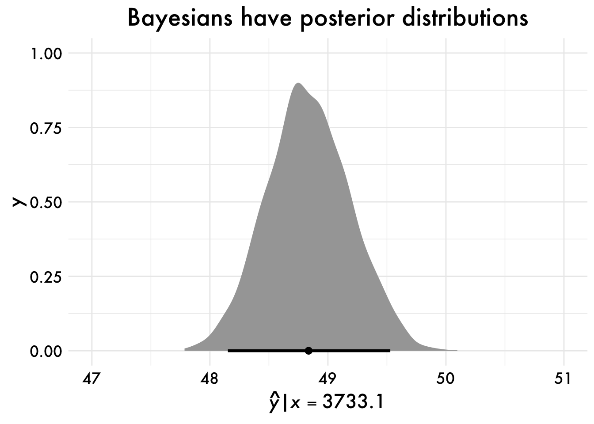
The dot at the base of the plot is the posterior mean, and the horizontal line marks the 95% percentile-based interval. If you’d like to mark the median instead, set point_interval = median_qi. If you’re like a different kind of horizontal interval, adjust the .width argument.
draws %>%
mutate(body_mass_g = mean(chinstrap$body_mass_g)) %>%
mutate(y_hat = beta0 + beta1 * body_mass_g) %>%
ggplot(aes(x = y_hat)) +
# note the changes to this line
stat_halfeye(point_interval = median_qi, .width = c(.5, .99)) +
scale_y_continuous(NULL, breaks = NULL) +
labs(title = "Bayesians have posterior distributions",
subtitle = "The dot marks the median.\nThe thicker line marks the 50% interval, and\nthe thinner line marks the 99% interval.",
x = expression(hat(italic(y))*'|'*italic(x)==3733.1)) +
coord_cartesian(xlim = c(47, 51)) + plot_aes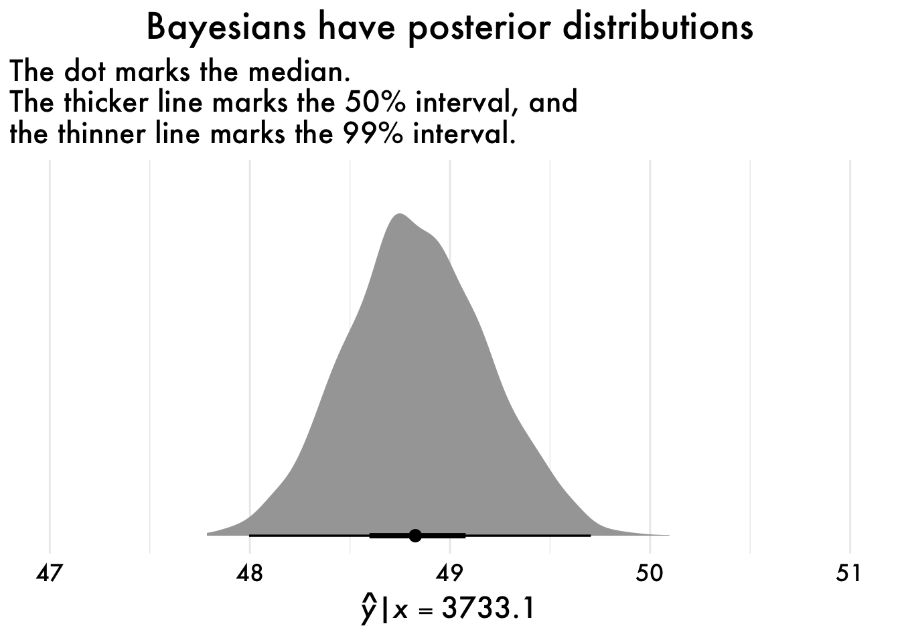
About those means, SD’s, and intervals.
You can describe a Bayesian posterior in a lot of different ways. Earlier we said the posterior mean is the Bayesian point estimate. This isn’t strictly true. Means are very popular, but you can summarize a posterior by its mean, median, or mode.
Let’s see what this looks like in practice. First, we compute and save our statistics for each of our model parameters.
points <- draws %>%
rename(`beta[0]` = beta0,
`beta[1]` = beta1) %>%
pivot_longer(cols = c(`beta[0]`, `beta[1]`, sigma),
names_to = "parameter") %>%
group_by(parameter) %>%
summarise(mean = mean(value),
median = median(value),
mode = Mode(value)) %>%
pivot_longer(starts_with("m"), names_to = "statistic")
# what?
points# A tibble: 9 × 3
parameter statistic value
<chr> <chr> <dbl>
1 beta[0] mean 32.2
2 beta[0] median 32.2
3 beta[0] mode 32.4
4 beta[1] mean 0.00446
5 beta[1] median 0.00446
6 beta[1] mode 0.00455
7 sigma mean 2.92
8 sigma median 2.90
9 sigma mode 2.85 Now plot.
draws %>%
rename(`beta[0]` = beta0,
`beta[1]` = beta1) %>%
pivot_longer(cols = c(`beta[0]`, `beta[1]`, sigma),
names_to = "parameter") %>%
ggplot(aes(x = value)) +
geom_density() +
geom_vline(data = points,
aes(xintercept = value, color = statistic),
size = 3/4) +
scale_color_viridis_d(option = "A", end = .8) +
scale_y_continuous(NULL, breaks = NULL) +
xlab("parameter space") +
facet_wrap(~ parameter, labeller = label_parsed, scales = "free", ncol = 1) +
theme(strip.text = element_text(size = 14)) + plot_aes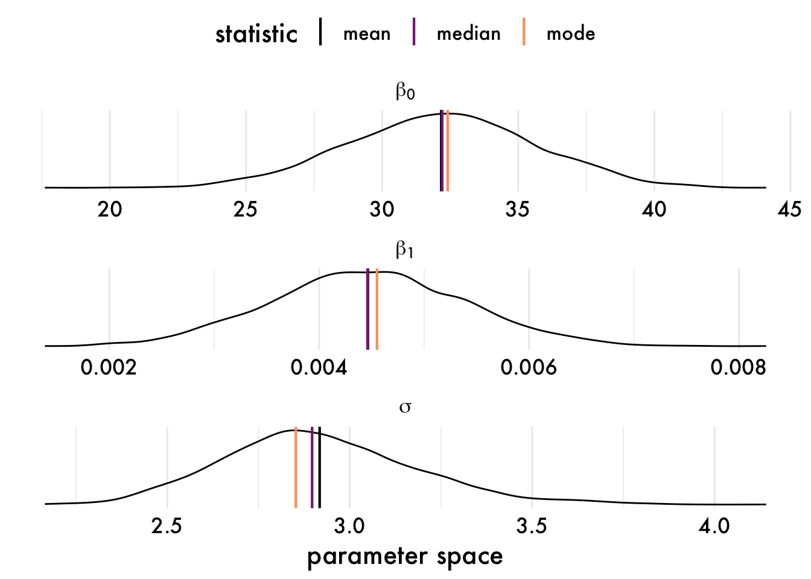
Question 2.3: Discuss the skew in \(\sigma\).Why it might arise, etc.?
- The mean is the brms default summary, and McElreath (2015, 2020) defaulted to the mean in his texts.
- The median is also available for many brms functions, and it’s what Gelman et al (2020) recommend.
- The mode can be attractive for very skewed distributions, and it’s what Kruschke (2015) used in his text.
With many brms functions, you can request the median by setting robust = TRUE. For example:
fixef(fit1.b) # means Estimate Est.Error Q2.5 Q97.5
Intercept 32.171601696 3.4599647320 25.197783898 38.767885598
body_mass_g 0.004464182 0.0009227771 0.002668377 0.006304322fixef(fit1.b, robust = TRUE) # medians Estimate Est.Error Q2.5 Q97.5
Intercept 32.207289570 3.4510956069 25.197783898 38.767885598
body_mass_g 0.004459851 0.0009074036 0.002668377 0.006304322Question 2.4: Given the skew in sigma and what you know about summary statistics, what might be the implication of using just the mean, median, or mode of posteriors to make a prediction?
SD’s and MAD SD’s.
Earlier we said the posterior SD is the Bayesian standard error. This isn’t strictly true. You can also use the median absolute deviation (MAD SD). If we let \(M\) stand for the median of some variable \(y\), which varies across \(i\) cases, we can define the MAD SD as
\[\textit{MAD SD} = 1.4826 \times \operatorname{median}_{i = 1}^n |y_i - M|,\]
where \(1.4826\) is a constant that scales the MAD SD into a standard-deviation metric. Here’s what this looks like in practice.
# go through this line by line
draws %>%
select(beta0) %>%
mutate(mdn = median(beta0)) %>%
mutate(`|yi - mdn|` = abs(beta0 - mdn)) %>%
summarise(MAD_SD = 1.4826 * median(`|yi - mdn|`))# A tibble: 1 × 1
MAD_SD
<dbl>
1 3.45Base R also has a mad() function.
?madHelp on topic 'mad' was found in the following packages:
Package Library
posterior /Library/Frameworks/R.framework/Versions/4.4-arm64/Resources/library
stats /Library/Frameworks/R.framework/Versions/4.4-arm64/Resources/library
Using the first match ...draws %>%
summarise(MAD_SD = mad(beta0))# A tibble: 1 × 1
MAD_SD
<dbl>
1 3.45You can request the MAD SD from many brms functions by setting robust = TRUE.
fixef(fit1.b) # SD Estimate Est.Error Q2.5 Q97.5
Intercept 32.171601696 3.4599647320 25.197783898 38.767885598
body_mass_g 0.004464182 0.0009227771 0.002668377 0.006304322fixef(fit1.b, robust = TRUE) # MAD SD Estimate Est.Error Q2.5 Q97.5
Intercept 32.207289570 3.4510956069 25.197783898 38.767885598
body_mass_g 0.004459851 0.0009074036 0.002668377 0.006304322- To my eye, many authors (e.g., Kruschke, McElreath) just use the SD.
- Gelman et al (see Section 5.3) recommend the MAD SD.
Bayesian intervals.
Bayesians describe the widths of their posteriors with intervals. I’ve seen these variously described as confidence intervals, credible intervals, probability intervals, and even uncertainty intervals. My recommendation is just pick a term, and clearly tell your audience what you mean (e.g., at the end of a Method section in a journal article).
To my eye, the most popular interval is a 95% percentile-based interval. 95% is conventional, perhaps due to the popularity of the 95% frequentist confidence interval, which is related to the 0.05 alpha level used for the conventional \(p\)-value cutoff. However, you can use other percentiles. Some common alternatives are 99%, 89%, 80%, and 50%.
Also, Bayesian intervals aren’t always percentile based. An alternative is the highest posterior density interval (HPDI), which has mathematical properties some find desirable.
brms only supports percentile-based intervals, but it does allow for a variety of different ranges via the prob argument. For example, here’s how to request 80% intervals in summary().
summary(fit1.b, prob = .80) Family: gaussian
Links: mu = identity; sigma = identity
Formula: bill_length_mm ~ 1 + body_mass_g
Data: chinstrap (Number of observations: 68)
Draws: 4 chains, each with iter = 2000; warmup = 1000; thin = 1;
total post-warmup draws = 4000
Regression Coefficients:
Estimate Est.Error l-80% CI u-80% CI Rhat Bulk_ESS Tail_ESS
Intercept 32.17 3.46 27.71 36.76 1.00 5027 2952
body_mass_g 0.00 0.00 0.00 0.01 1.00 5128 2545
Further Distributional Parameters:
Estimate Est.Error l-80% CI u-80% CI Rhat Bulk_ESS Tail_ESS
sigma 2.92 0.27 2.59 3.26 1.00 1860 1673
Draws were sampled using sampling(NUTS). For each parameter, Bulk_ESS
and Tail_ESS are effective sample size measures, and Rhat is the potential
scale reduction factor on split chains (at convergence, Rhat = 1).Regarding interval widths:
- 95% Intervals are widely used.
- McElreat likes 89% intervals, and uses them as a default in his rethinking package.
- Some of the bayesplot, ggdist, and tidybayes functions return 80% intervals.
- Some of the ggdist, and tidybayes functions return 66% or 50% intervals.
- I’ve heard Gelman report his fondness for 50% intervals on his blog (https://statmodeling.stat.columbia.edu/2016/11/05/why-i-prefer-50-to-95-intervals/).
Regarding interval types:
- Percentile-based intervals are widely used in the Stan ecosystem, and are supported in texts like Gelman et al.
- Kruschke has consistently advocates for HPDI’s in his articles, and in his text.
Posterior summaries with tidybayes.
Matthew Kay’s tidybayes package (https://mjskay.github.io/tidybayes/) offers an array of convenience functions for summarizing posterior distributions with points and intervals. See the Point summaries and intervals section of Kay’s Extracting and visualizing tidy draws from brms models vignette (https://mjskay.github.io/tidybayes/articles/tidy-brms.html#point-summaries-and-intervals) for a detailed breakdown. In short, the family of functions use the naming scheme [median|mean|mode]_[qi|hdi]. Here are a few examples.
draws %>% mean_qi(beta0) # mean and 95% percentile interval# A tibble: 1 × 6
beta0 .lower .upper .width .point .interval
<dbl> <dbl> <dbl> <dbl> <chr> <chr>
1 32.2 25.2 38.8 0.95 mean qi draws %>% median_qi(beta0, .width = .80) # median and 80% percentile interval# A tibble: 1 × 6
beta0 .lower .upper .width .point .interval
<dbl> <dbl> <dbl> <dbl> <chr> <chr>
1 32.2 27.7 36.8 0.8 median qi draws %>% mode_hdi(beta0, .width = c(.5, .95)) # mode, with 95 and 50% HPDI's# A tibble: 2 × 6
beta0 .lower .upper .width .point .interval
<dbl> <dbl> <dbl> <dbl> <chr> <chr>
1 32.4 30.5 35.1 0.5 mode hdi
2 32.4 25.1 38.6 0.95 mode hdi As an aside, the Mode() function we used a while back was also from tidybayes.
Spaghetti plots.
Remember how we said the draw was something like 4,000 separate equations for our Bayesian model? Let’s see that again.
draws %>%
select(.draw, beta0, beta1) %>%
mutate(body_mass_g = mean(chinstrap$body_mass_g)) %>%
# here's the equation
mutate(y_hat = beta0 + beta1 * body_mass_g) %>%
# subset the top 6
head()# A tibble: 6 × 5
.draw beta0 beta1 body_mass_g y_hat
<int> <dbl> <dbl> <dbl> <dbl>
1 1 37.9 0.00297 3733. 49.0
2 2 39.3 0.00251 3733. 48.7
3 3 34.2 0.00389 3733. 48.7
4 4 31.4 0.00458 3733. 48.5
5 5 28.5 0.00541 3733. 48.7
6 6 34.1 0.00398 3733. 49.0One way we might emphasize the 4,000 equations is with a spaghetti plot. When we display the fitted line for bill_length_mm over the range of body_mass_g values, we can display a single line for each posterior draw. Here’s what that can look like.
range(chinstrap$body_mass_g)[1] 2700 4800# Note: go through this one line at a time
draws %>%
select(.draw, beta0, beta1) %>%
expand_grid(body_mass_g = range(chinstrap$body_mass_g)) %>%
mutate(y_hat = beta0 + beta1 * body_mass_g) %>%
# plot!
ggplot(aes(x = body_mass_g, y = y_hat, group = .draw)) +
geom_line(linewidth = 1/10, alpha = 1/10) + plot_aes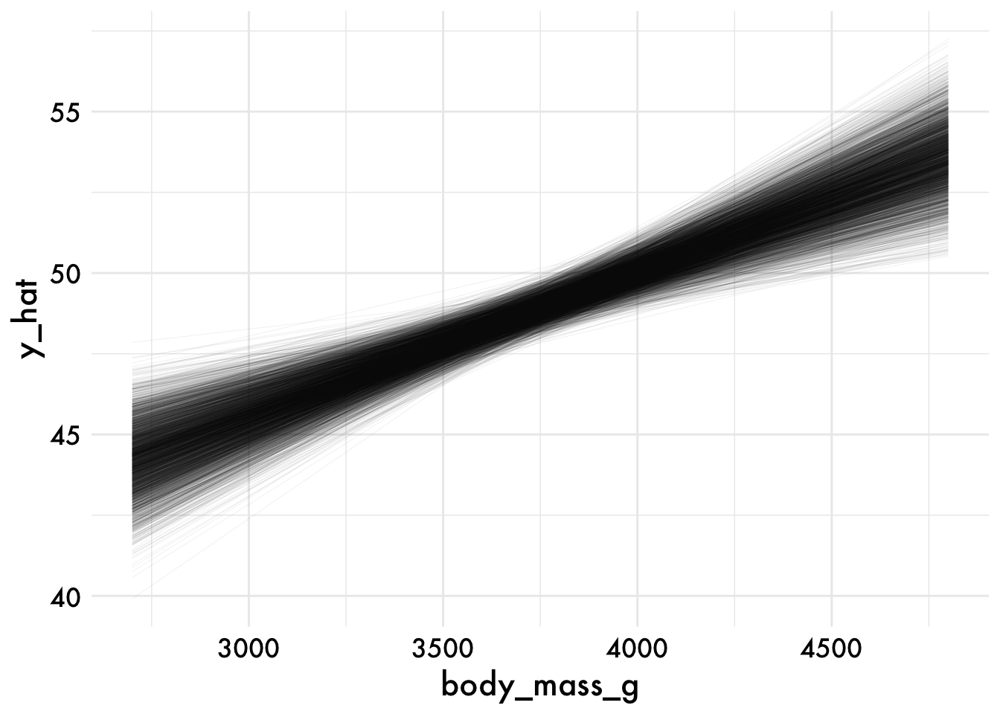
It might be easier to see what’s going on with a random subset of, say, 10 of the posterior draws.
set.seed(10)
draws %>%
# take a random sample of 10 rows
slice_sample(n = 10) %>%
select(.draw, beta0, beta1) %>%
expand_grid(body_mass_g = range(chinstrap$body_mass_g)) %>%
mutate(y_hat = beta0 + beta1 * body_mass_g) %>%
ggplot(aes(x = body_mass_g, y = y_hat, group = .draw)) +
geom_line(linewidth = 1/2, alpha = 1/2) + plot_aes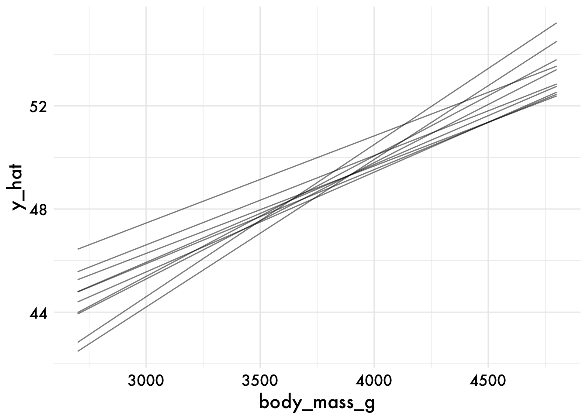
While we’re at it, let’s take 20 draws and do a little color coding.
set.seed(20)
draws %>%
# take a random sample of 20 rows
slice_sample(n = 20) %>%
select(.draw, beta0, beta1) %>%
expand_grid(body_mass_g = range(chinstrap$body_mass_g)) %>%
mutate(y_hat = beta0 + beta1 * body_mass_g) %>%
ggplot(aes(x = body_mass_g, y = y_hat, group = .draw, color = beta0)) +
geom_line() +
scale_color_viridis_c(expression(beta[0]~(the~intercept)), end = .9) + plot_aes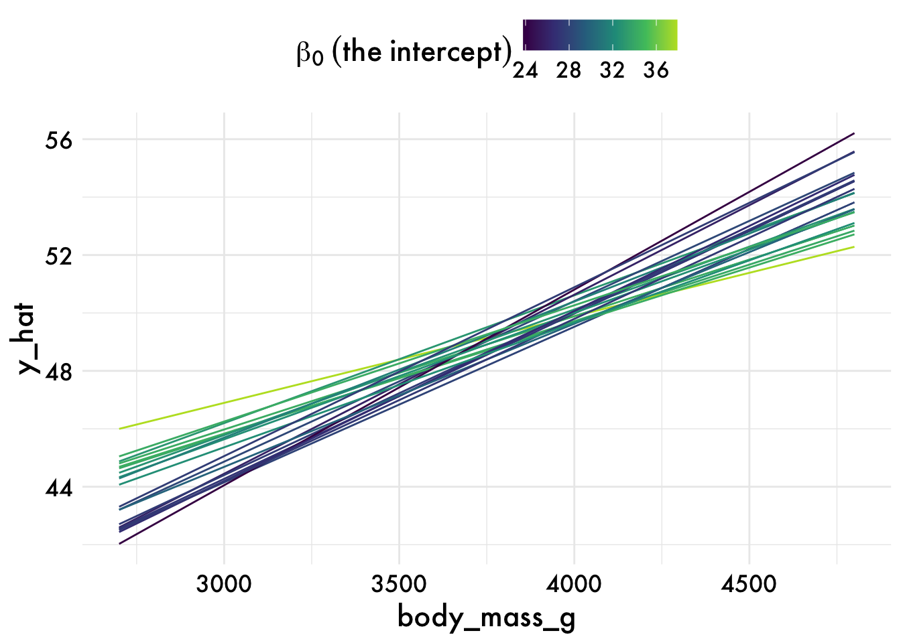
Do you remember how we said \(\beta_0\) and \(\beta_1\) had a strong negative correlation? Notice how the lines computed by lower \(\beta_0\) values also tend to have higher slopes. This will happen all the time with conventional regression models.
Question 2.5: We have done all this without yet specifying a prior. What do you think is going on?
The default prior is being used. The default prior is a weakly informative prior that is centered around 0.
Question/Exercise:
In the last part, we made a subset of the penguins data called gentoo, which was only the cases for which species == "Gentoo". Do that again and refit the Bayesian model to those data. Can you then remake some of the figures in this file with the new version of the model?
model_path <- file.path("~/Library/CloudStorage/GoogleDrive-sm9518@princeton.edu/My Drive/Classes/Stats-blog/posts/Lab-8/models/fit2.rds")
if (!file.exists(model_path)) {
fit2 <- brm(
data = gentoo,
bill_length_mm ~ 1 + body_mass_g
)
saveRDS(fit1.b, model_path)
} else {
# If the RDS file already exists, load the data from it
fit2 <- readRDS(model_path)
}
draws <- as_draws_df(fit2)
draws <- draws %>%
mutate(beta0 = b_Intercept,
beta1 = b_body_mass_g)
draws %>%
rename(`beta[0]` = beta0,
`beta[1]` = beta1) %>%
pivot_longer(cols = c(`beta[0]`, `beta[1]`, sigma),
names_to = "parameter") %>%
ggplot(aes(x = value)) +
geom_density() +
geom_vline(data = points,
aes(xintercept = value, color = statistic),
size = 3/4) +
scale_color_viridis_d(option = "A", end = .8) +
scale_y_continuous(NULL, breaks = NULL) +
xlab("parameter space") +
facet_wrap(~ parameter, labeller = label_parsed, scales = "free", ncol = 1) +
theme(strip.text = element_text(size = 14)) + plot_aes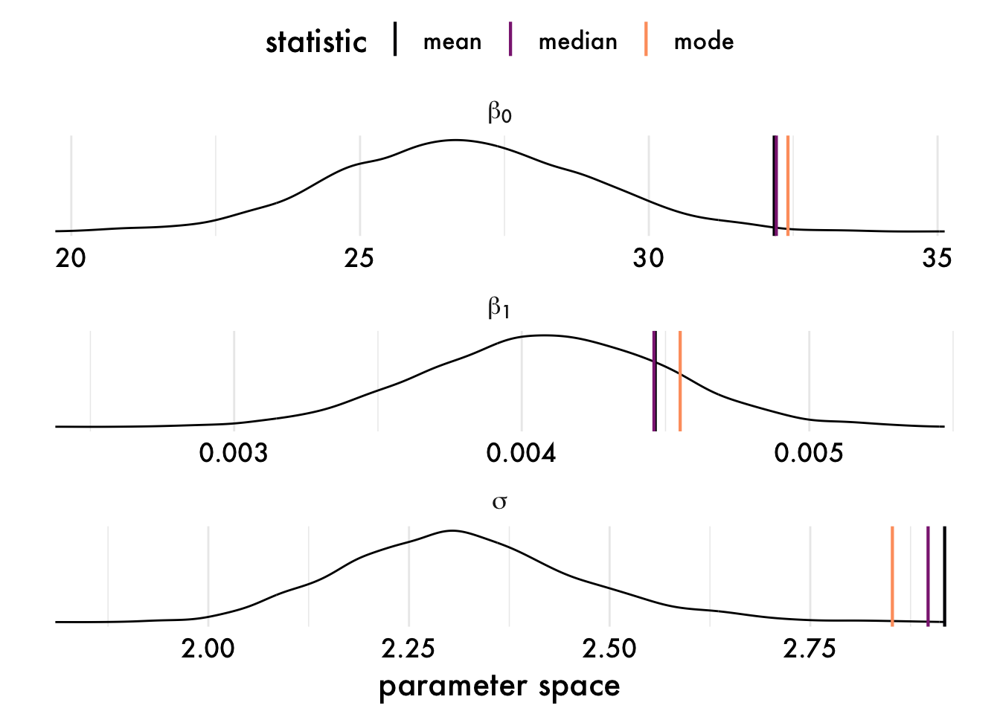
References
Gelman, A., Hill, J., & Vehtari, A. (2020). Regression and other stories. Cambridge University Press. https://doi.org/10.1017/9781139161879
Kruschke, J. K. (2015). Doing Bayesian data analysis: A tutorial with R, JAGS, and Stan. Academic Press. https://sites.google.com/site/doingbayesiandataanalysis/
McElreath, R. (2020). Statistical rethinking: A Bayesian course with examples in R and Stan (Second Edition). CRC Press. https://xcelab.net/rm/statistical-rethinking/
McElreath, R. (2015). Statistical rethinking: A Bayesian course with examples in R and Stan. CRC press. https://xcelab.net/rm/statistical-rethinking/
Session information
sessionInfo()R version 4.4.1 (2024-06-14)
Platform: aarch64-apple-darwin20
Running under: macOS 15.3.2
Matrix products: default
BLAS: /Library/Frameworks/R.framework/Versions/4.4-arm64/Resources/lib/libRblas.0.dylib
LAPACK: /Library/Frameworks/R.framework/Versions/4.4-arm64/Resources/lib/libRlapack.dylib; LAPACK version 3.12.0
locale:
[1] en_US.UTF-8/en_US.UTF-8/en_US.UTF-8/C/en_US.UTF-8/en_US.UTF-8
time zone: America/New_York
tzcode source: internal
attached base packages:
[1] stats graphics grDevices utils datasets methods base
other attached packages:
[1] ggdist_3.3.2 broom.mixed_0.2.9.5 broom_1.0.7
[4] brms_2.21.0 Rcpp_1.0.13 ggside_0.3.1
[7] lubridate_1.9.3 forcats_1.0.0 stringr_1.5.1
[10] dplyr_1.1.4 purrr_1.0.4 readr_2.1.5
[13] tidyr_1.3.1 tibble_3.2.1 ggplot2_3.5.1
[16] tidyverse_2.0.0 pacman_0.5.1
loaded via a namespace (and not attached):
[1] tidyselect_1.2.1 viridisLite_0.4.2 farver_2.1.2
[4] loo_2.8.0 fastmap_1.2.0 tensorA_0.36.2.1
[7] digest_0.6.37 timechange_0.3.0 estimability_1.5.1
[10] lifecycle_1.0.4 StanHeaders_2.32.10 magrittr_2.0.3
[13] posterior_1.6.0 compiler_4.4.1 sass_0.4.9
[16] rlang_1.1.5 tools_4.4.1 utf8_1.2.4
[19] yaml_2.3.10 knitr_1.48 labeling_0.4.3
[22] bridgesampling_1.1-2 htmlwidgets_1.6.4 pkgbuild_1.4.4
[25] curl_5.2.2 plyr_1.8.9 abind_1.4-5
[28] withr_3.0.1 grid_4.4.1 stats4_4.4.1
[31] fansi_1.0.6 xtable_1.8-4 colorspace_2.1-1
[34] future_1.34.0 inline_0.3.19 emmeans_1.10.7
[37] globals_0.16.3 scales_1.3.0 cli_3.6.4
[40] mvtnorm_1.3-1 rmarkdown_2.28 generics_0.1.3
[43] RcppParallel_5.1.9 rstudioapi_0.17.1 reshape2_1.4.4
[46] tzdb_0.4.0 cachem_1.1.0 rstan_2.32.6
[49] splines_4.4.1 bayesplot_1.11.1 parallel_4.4.1
[52] matrixStats_1.4.1 vctrs_0.6.5 V8_6.0.1
[55] Matrix_1.7-0 jsonlite_1.8.9 hms_1.1.3
[58] listenv_0.9.1 crosstalk_1.2.1 jquerylib_0.1.4
[61] glue_1.8.0 parallelly_1.38.0 codetools_0.2-20
[64] DT_0.33 distributional_0.5.0 stringi_1.8.4
[67] gtable_0.3.5 QuickJSR_1.3.1 palmerpenguins_0.1.1
[70] munsell_0.5.1 pillar_1.9.0 furrr_0.3.1
[73] htmltools_0.5.8.1 Brobdingnag_1.2-9 R6_2.5.1
[76] evaluate_1.0.0 lattice_0.22-6 backports_1.5.0
[79] bslib_0.8.0 rstantools_2.4.0 coda_0.19-4.1
[82] gridExtra_2.3 nlme_3.1-164 checkmate_2.3.2
[85] mgcv_1.9-1 xfun_0.49 pkgconfig_2.0.3